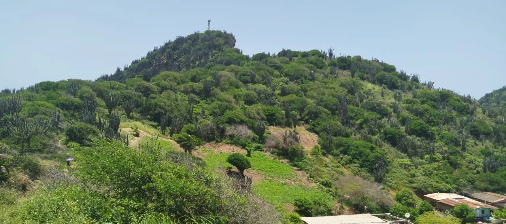
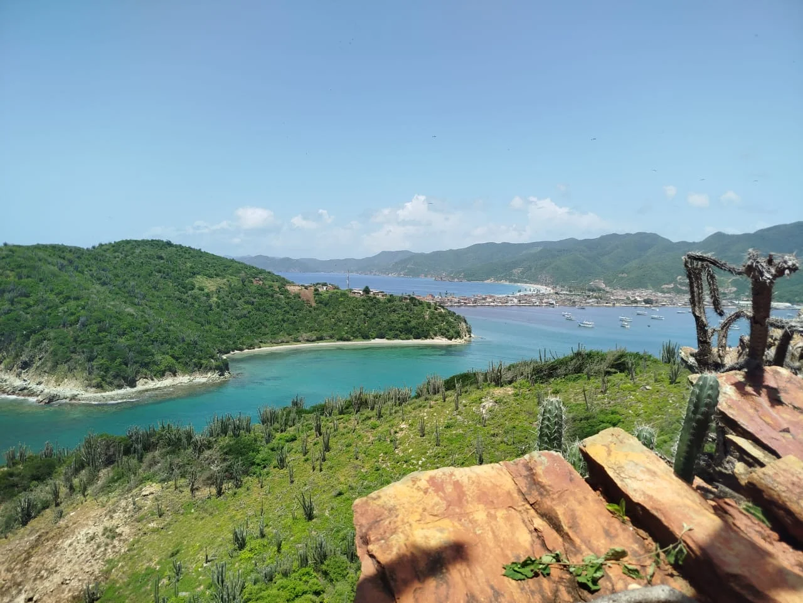
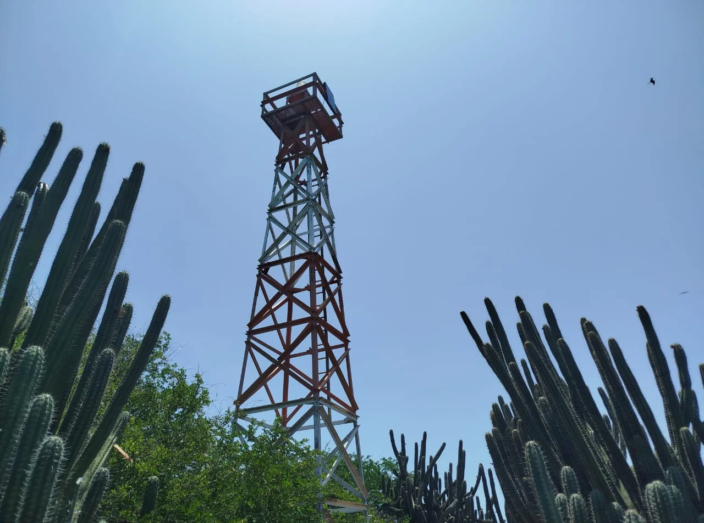
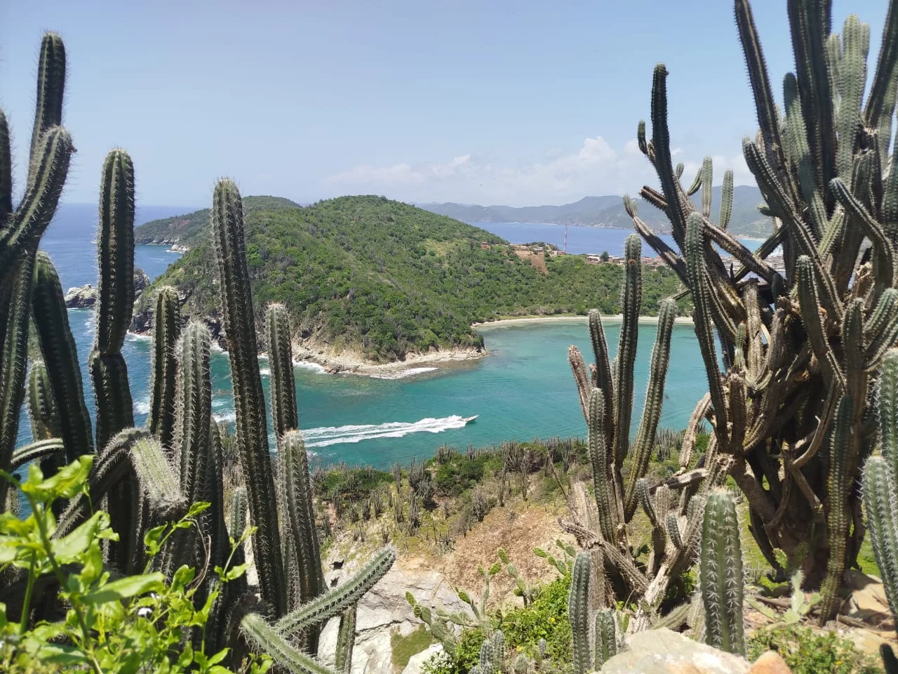
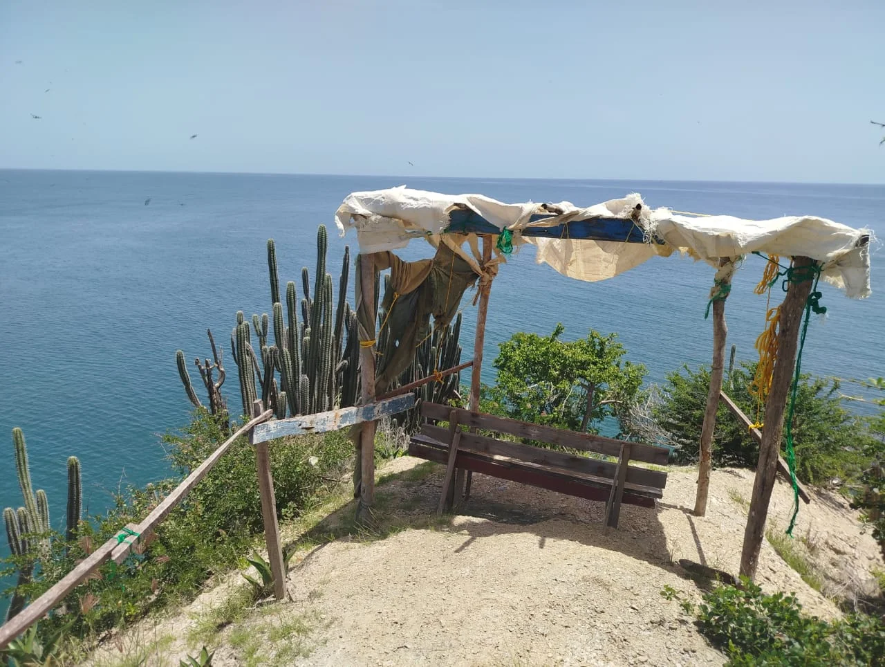
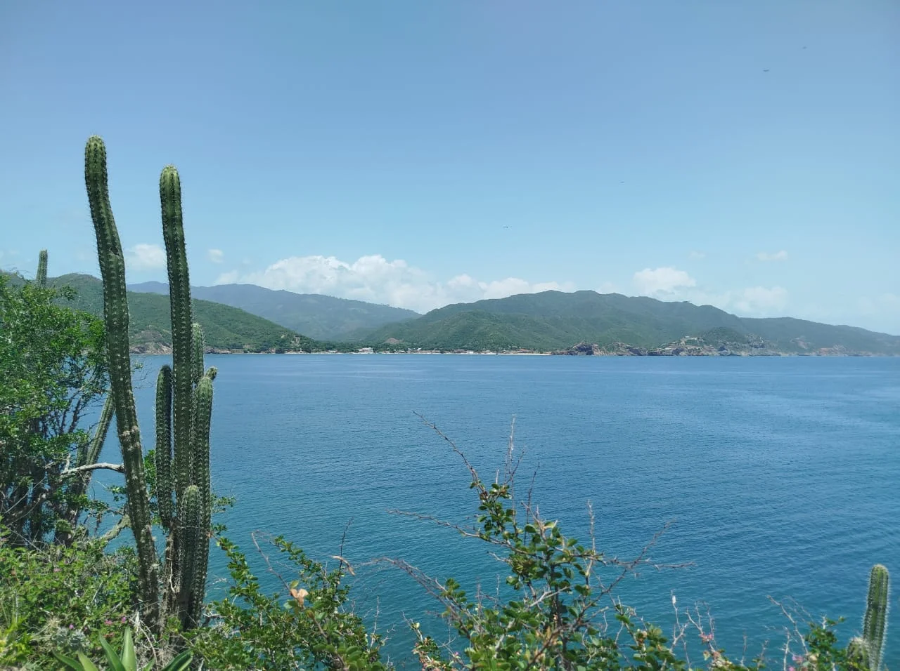

El Cerro El Islote debe su nombre a la vista privilegiada y directa que ofrece hacia la formación rocosa conocida como "El Islote".




Este cerro, que destaca por su altura y vegetación semiárida, sirve como un punto montañoso para el cenderismo de El Morro de Puerto Santo, aunque con una densidad menor que El Dique o La Pica, pero por el contrario una subida mas desafiante para los altruistas dado su terreno más agreste. Su cumbre no solo es un mirador natural, sino también un punto estratégico, evidenciado por la presencia de un faro que se alza entre los característicos cactus de la zona, ayudando a las embarcaciones a navegar sin problemas.

Cómo Llegar
Su acceso es exclusivamente marítimo, requiriendo el uso de botes o cayucos. Aunque es posible zarpar desde múltiples puntos de El Morro, al llegar al Islote te encontrarás con un sendero que asciende elevando su nivel de dificultad hasta llegar a la cima de la montaña donde se encuentra el faro
Mejores Días
Se recomienda visitarlo en días de clima cálido y soleado para asegurar la seguridad en el sendero árido. La claridad es crucial para disfrutar de la impresionante visibilidad hacia el islote y la costa de El Morro de Puerto Santo, haciendo el ascenso más gratificante.
¿Por Qué Visitarla?
La principal razón es la vista insuperable hacia el mar, la bahía y, específicamente, el hacia El Morro. Es un destino ideal para el senderismo gracias a su ambiente de monte y la oportunidad de ver la torre de vigilancia, un elemento icónico de su cima.
Cerro El Islote
La subida a El Islote ofrece una experiencia de senderismo en un entorno distintivo. El camino está rodeado de cactáceas y flora seca, proporcionando un marcado contraste con el azul intenso del mar Caribe visible a cada paso. Una vez en la cima, el visitante encuentra un espacio de contemplación, posiblemente adaptado con alguna estructura simple para sombra, como se aprecia en las imágenes. Esta elevación actúa como un puesto de observación natural que abarca una vasta extensión de la bahía y el entorno montañoso circundante. La importancia de este cerro radica en su función dual: es un hogar para una parte de la comunidad y un centinela natural de la costa. Las vistas desde aquí son de las más abiertas y dramáticas, enfocándose especialmente en la separación entre la tierra firme y el mar. Es el lugar perfecto para observar la actividad pesquera de la bahía y la geografía accidentada de la costa, permitiendo una conexión íntima con la naturaleza y el carácter robusto de este rincón de El Morro de Puerto Santo.
